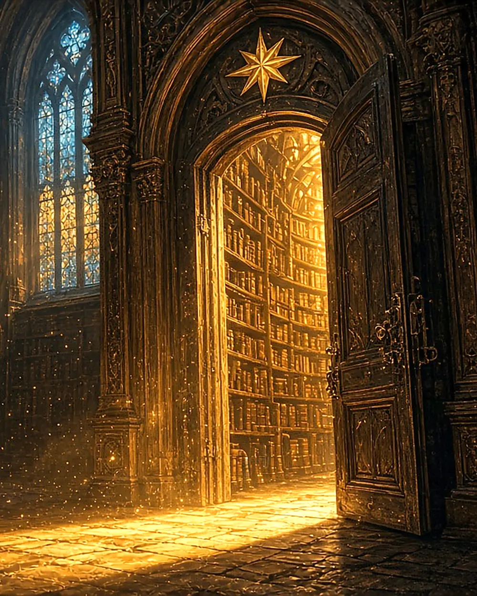

MYSTERY · LEVEL 4
The Hidden Door
Maya pushed open the old library door. A warm light spilled out, and dust danced in the air like tiny stars.
Rows of books stretched higher than she could see. Each spine seemed to glow with a secret.
Somewhere in this library, a story was waiting — a story that might change everything.
